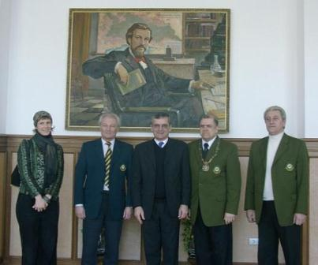

L’article de François MAURICE « La Francophonie à l’agonie… », paru dans le numéro de septembre de notre journal, a éveillé un vif intérêt de nos lecteurs. Qu’est-ce qui a intéressé précisément nos lecteurs dans le contenu de cet article, a provoqué des jugements vifs, ou des remarques polémiques ? À propos de tout cela notre correspondant Hélène SYDOROVA a parlé avec Ilya NAVKA, Vice–Recteur aux Relations internationales de l’Université Nationale Technique de Donetsk.
H.S. : - Dites-nous, s’il vous plaît, vous avez lu cet article en français ou en traduction ?
I.N. : - À mon grand regret, je ne connais pas assez bien le français pour me permettre de lire les textes difficiles. J’ai lu la traduction de l’article. Je veux remarquer, quand même, que j’ai essayé d’apprendre le français moi-même plus d’une fois. Mais je n’ai pas obtenu le résultat cherché pour le moment.
Il me semble, pour la raison qu’il n’y a pas de manuels pour l’étude intensive de la langue, et cette raison est représentée dans l’article discuté. Les manuels classiques, que j’ai utilisés, me semblent trop volumineux. Chaque fois il me manquait du temps pour résoudre ce problème, surtout pour apprendre la phonétique.
H.S. : - Quels autres problèmes vous ont poussé à la discussion ?
I.N. : Il y en a assez. C’est que l’auteur de l’article a marqué précisément, comme par un cachet de la poste, les adresses et les sources de menaces en ce qui concerne la Francophonie. En particulier, il montre les positions des hommes politiques d’État, des hauts fonctionnaires qui font avancer les projets de la restriction de la langue française à l’échelle nationale, régionale et mondiale.
D’après mon activité professionnelle, en février 2006, j’ai eu honneur d’être présenté à son Excellence l’Ambassadeur Extraordinaire et Plénipotentiaire de la France en Ukraine Monsieur Jean-Paul VEZIANT.

Visite de Monsieur Jean-Paul VEZIANT à l’Université Nationale Technique de Donetsk
Au cours des rencontres d’affaires suivantes il était impossible de ne pas faire attention au compassement et à la qualité d'opérativité que l’ambassadeur manifestait aux questions du développement de la Francophonie dans la région de Donetsk.
Dans ses points de vue, dans ses façons d’agir dans les solutions de n’importe quel problème, on voyait la position non seulement du diplomate, de l’homme politique, mais, en premier lieu, du citoyen. Il est évident que de tels leaders résolvent les problèmes mentionnés, plus exactement, ils ne permettent pas de surgir ces problèmes.
H.S. : - Le rôle de la personnalité dans la décision des problèmes sociaux est connu. Mais dans le nombre des problèmes énumérés il y a des processus de l’échelle planétaire, globale. Que faire avec cela ?
I.N. : - Aujourd’hui les processus compliqués, divers et contradictoires de la globalisation sont l’objet de l’étude et d’analyse des instituts compétents, des savants-globalistes. Sans intrusion dans cette sphère, il faut noter que « l’atlantisme » est bien et correctement mentionné par l’auteur comme un instrument puissant pour faire pousser les intérêts des États-Unis dans les sphères différentes de la coexistence humaine. Il en existe une grande quantité d’exemples et de confirmations. J’en cite un. En 2005 l’Université Nationale Technique de Donetsk a obtenu le droit d’être membre de l’Agence Universitaire de la Francophonie. Pratiquement notre participation était réalisée par le Bureau Europe centrale et orientale qui s’orientait vers le travail avec les universités des 32 pays de l’étendue post-soviétique, du groupe Vychégrad et de la péninsule Balkanique.
Grâce au management professionnel et effectif de l’administration du Bureau (Liliane Ramarosoa, Roxana Turcanu et d’autres) la série de projets et de programmes fructueux ont été réalisés par les militants des universités roumaines, russes, moldaves et ukrainiennes (Université nationale Technique de Donetsk).
Toutefois il faut porter l’attention sur l’absence complète des représentants des universités de quelques pays dans la réalisation de ces projets.
En discutant ce problème pendant les conversations privées avec les collègues lithuaniens et polonais il m’a fallu entendre que l’ignorance de la Francophonie, le boycottage silencieux du travail de ses instituts, de ses structures d’organisation – c’est la manifestation de l’atlantisme fameux qui est exprimé dans la politique de l’État de quelques pays. « C’est l’obséquiosité de laquais, qui mène à l’ensauvagement », - c’est ainsi que l’un de mes interlocuteurs a déterminé cette politique.
H.S. : - S’il vous plaît, une phrase pour conclure notre conversation.
I.N. : - Pour conclure, je veux noter la précision, la netteté et la compacité de l’exposé, ce qui est le mérite absolu non seulement de l’auteur, Monsieur F. Maurice, mais aussi de la langue qu’il a utilisée.
Partager cette page